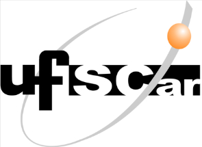
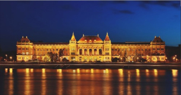
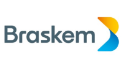
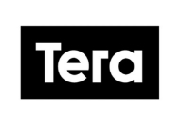

Apresentação
Sobre mim
- 29 anos
- Engenheiro de Materiais
- Natural de Gov. Valadares - MG
- Resido atualmente em São Paulo - SP
- Ex-trainee corporativo do Grupo Fleury
- 4+ anos como Product Manager
Experiência em:
- Gestão de Projetos
- Planejamento Financeiro - FP&A
- Inteligência de Negócios
- Produtos B2B/B2C
- Sites/apps
- E-commerce
Formação

Universidade Federal de São Carlos • 2011-2016
Engenharia de Materiais

Budapest University of Technology and Economics • 2014-2015
Engenharia de Mecânica

Braskem
Estágio em Engenharia de Materiais - Tecnologia e Inovação • 2016

FGV
Digital Analytics Strategic Management • 2019

Tera
Product Leadership • 2021